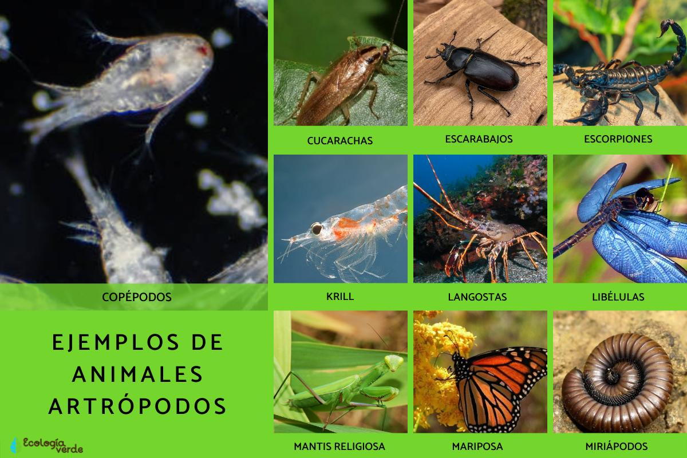
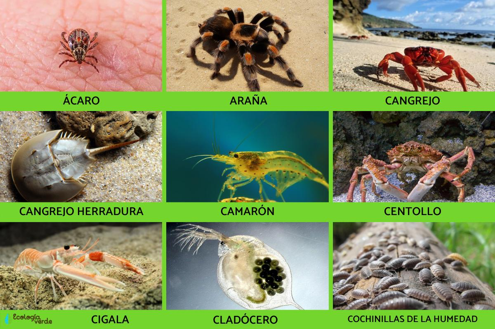
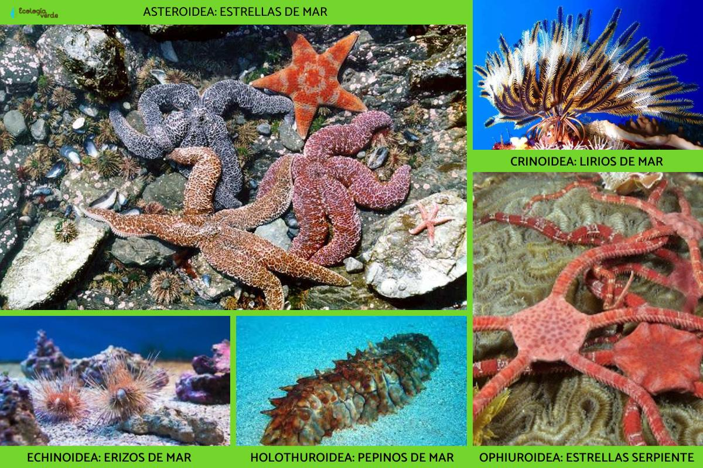
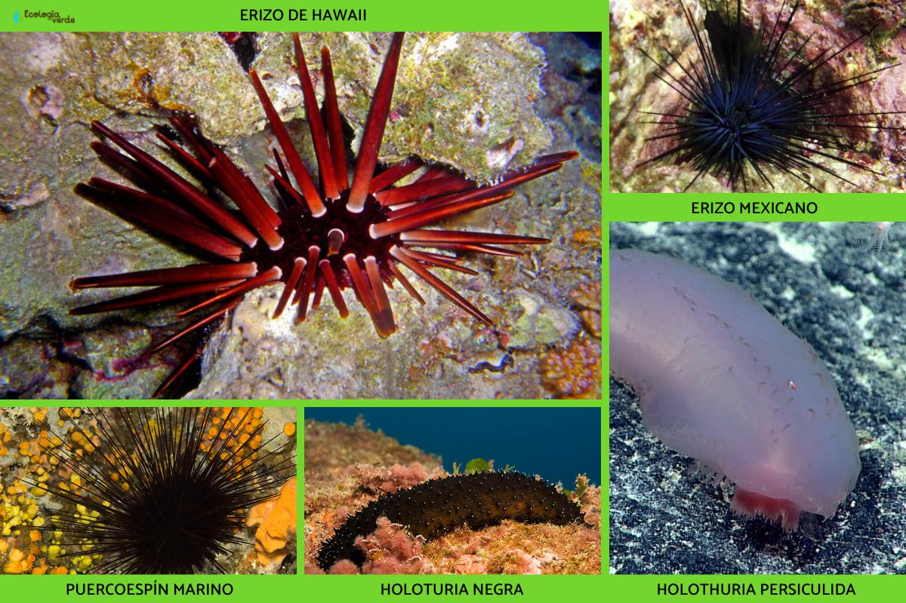
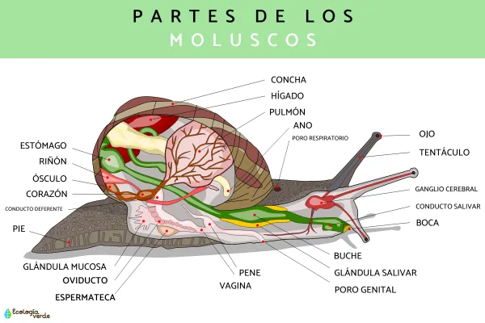
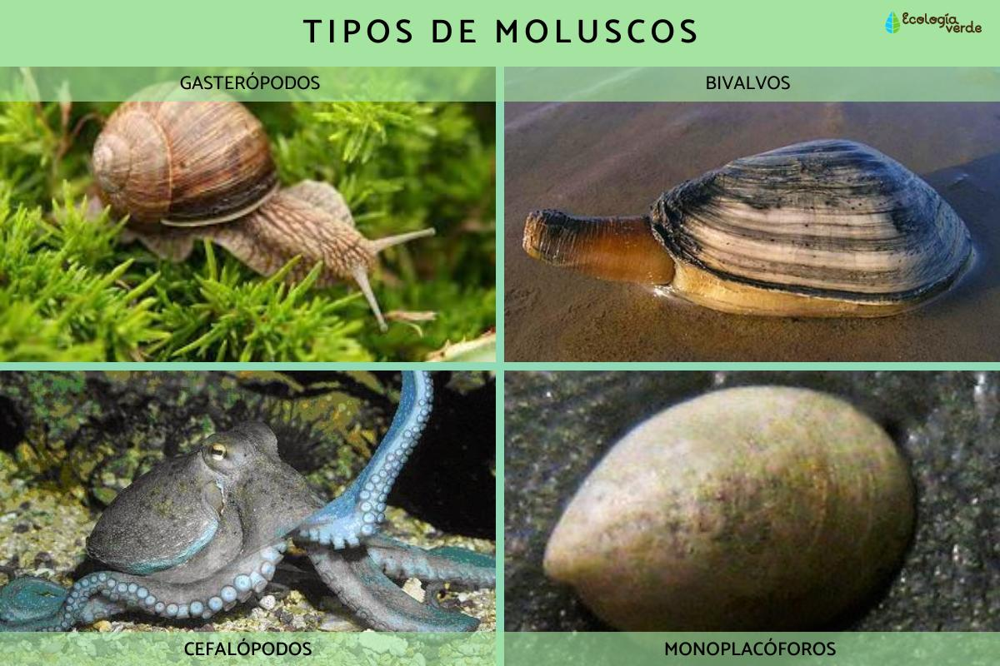
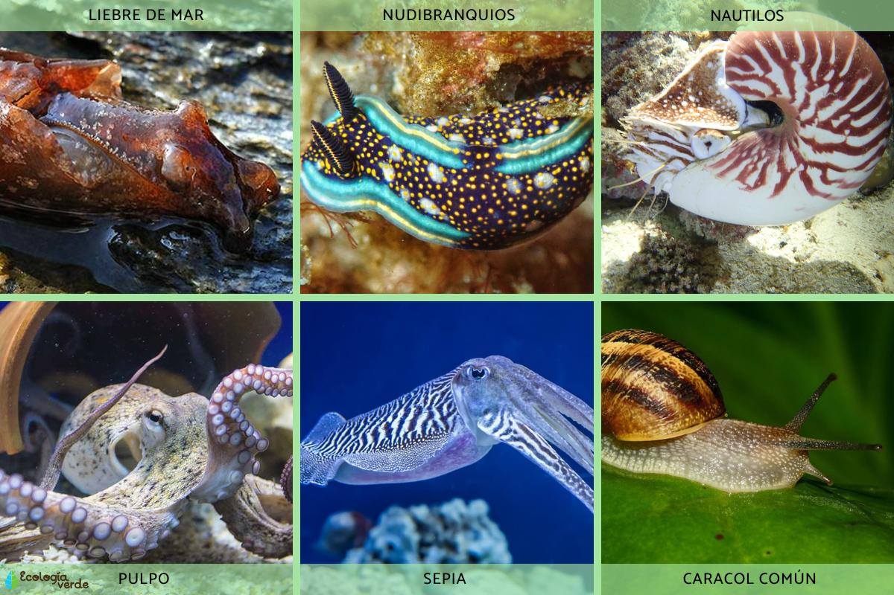
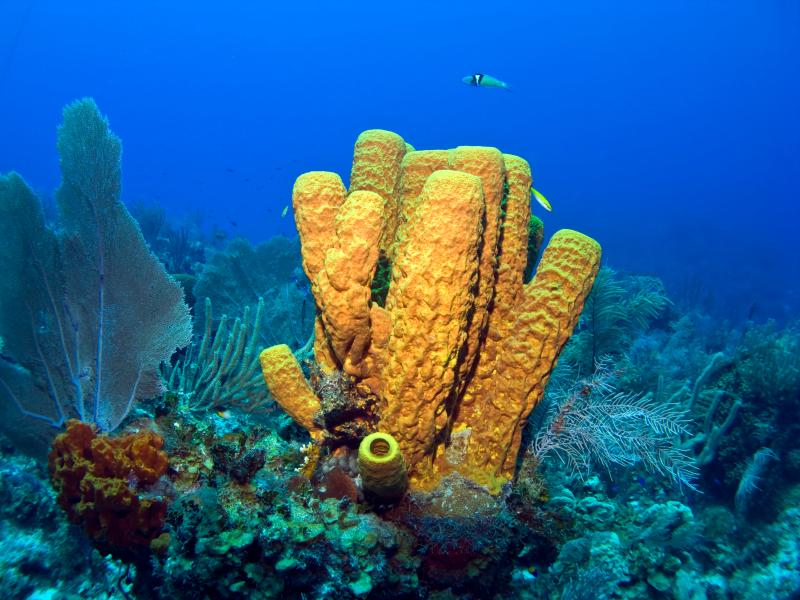
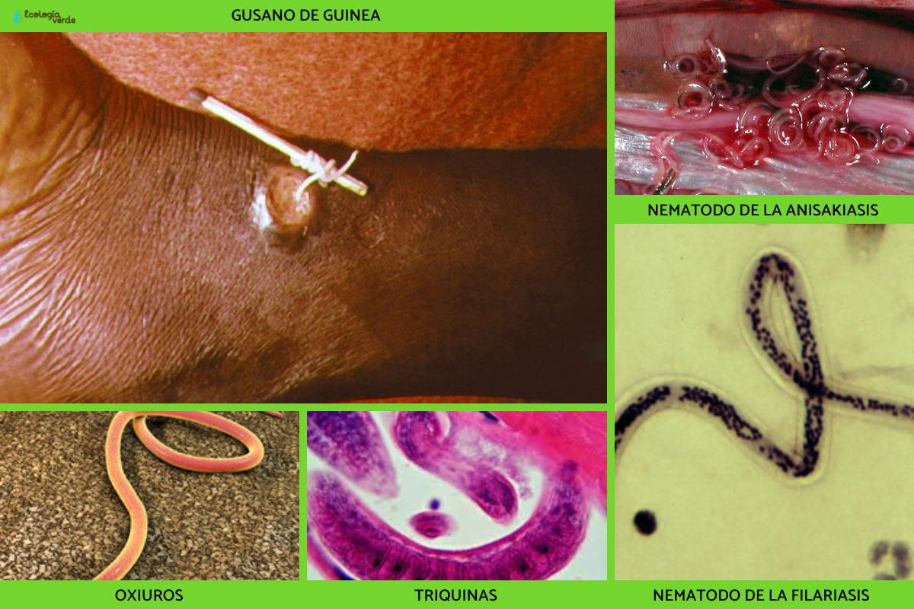
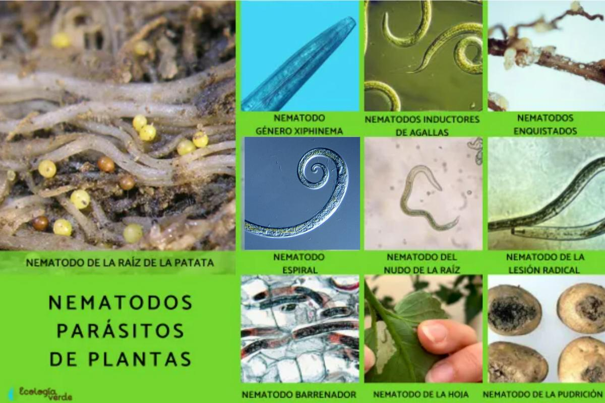

REINO ANIMAL
Artrópodos
Qué son los artrópodos: características, clasificación y ejemplos
Los animales artrópodos son animales invertebrados que constituyen el filo más numeroso y diverso dentro de los
29 filos que conforman el Reino Animalia o Animal.
Aparecieron sobre la faz de la Tierra hace aproximadamente unos 600 o 500 millones de años. Diversos estudios
evolutivos han revelado cómo los artrópodos evolucionaron muy probablemente a partir de algún tipo de gusano
similar a los anélidos marinos que existen en la actualidad, de manera que los segmentos diferenciados que
caracterizan a los artrópodos podrían ser una evolución de los segmentos homólogos de dichos gusanos.
En los próximos apartados veremos con todo detalle cuáles son las principales características que definen a este
extenso grupo de animales, así como muchos ejemplos de artrópodos para conocerlos más de cerca.
Características de los Artrópodos
- Presentan un cuerpo con articulaciones: formado por diferentes segmentos articulados, apéndices y un
exoesqueleto.
- Respiran mediante un sistema traqueal: que les permite el intercambio de gases con la atmósfera, aunque
algunos grupos de artrópodos acuáticos presentan respiración por branquias.
- Cuentan con un aparato digestivo adaptado: se amolda a las diferentes estrategias de caza y digestión que
caracteriza a cada tipo de artrópodo, contando a veces con glándulas venenosas que permiten atacar a sus
presas de forma más efectiva o la capacidad de digerir su alimento con la ayuda de sustancias químicas.
- La reproducción de los artrópodos suele ser de tipo sexual: con la intervención de organismos hembras y
machos, aunque algunas especies son hermafroditas y otras son capaces de reproducirse asexualmente. Las que
lo hacen por reproducción asexual, mayormente lo hacen mediante partenogénesis y otros métodos que permiten
la supervivencia y desarrollo de sus individuos.
- Han tenido un gran éxito evolutivo: ya que han conquistado diferentes hábitats, desde los sistemas acuáticos
marinos y dulces, así como el subsuelo, la superficie terrestre y el aire.
Clasificación de los Artrópodos
- Subfilo Unirrámeos: esta clasificación de los artrópodos incluye la clase Diplópodos (milpiés), Quilópodos
(ciempiés), Paurópodos (pequeños animales con 9-10 pares de patas y sin ojos), Sínfilos (ciempiés de
jardín), e insectos. Descubre la Clasificación de los insectos en el siguiente artículo que te sugerimos.
- Subfilo Crustáceos: Clase Braquiópodos (cladóceros y otros crustáceos de pequeño tamaño con láminas
branquiales), Remípedos (extraños crustáceos ciegos que viven en cuevas a gran profundidad, en ecosistemas
marinos), Cefalocáridos (escasas especies de crustáceos bentónicos), Maxilópodos (copépodos y otros
crustáceos de pequeño tamaño con el abdomen reducido), Ostrácodos (microscópicos, con valvas) y
Malacostráceos (crustáceos más conocidos como langostas, cigalas, etc.). Puedes averiguar más información
sobre los Crustáceos: qué son, tipos, características y ejemplos en este post.
- Subfilo Quelicerados: la última clasificación de los artrópodos incluye la clase Arácnidos (arañas,
escorpiones y ácaros), Merostomados (cangrejos herradura), y Picnogónidos (arañas de mar). No dudes en
consultar este post sobre los Arácnidos: características, tipos y ejemplos, aquí.
- Subfilo extinto Trilobitomorfos: en él se incluían a los fascinantes trilobites.


Fuente
Volver
Equinodermos
Qué son los Equinodermos
Los equinodermos (filo Echinodermata) forman parte del extenso y diverso reino de los animales, también conocido
como Reino Animalia. Actualmente cuentan con la presencia de unas 7.000 especies, aunque, a lo largo de la
historia de la evolución de la biodiversidad de la Tierra, los equinodermos llegaron a contar con más de 20.000
especies de animales, por lo que 13.000 de ellas se fueron extinguiendo.
Conocidos por algunos grupos de animales muy característicos y llamativos de los fondos oceánicos, como las
estrellas y los erizos de mar, la gran biodiversidad que albergan los equinodermos los convierte en uno de los
filos más estudiados por zoólogos y, sin lugar a dudas, más admirados por todos los amantes de la naturaleza.
En los próximos apartados de este artículo detallaremos información acerca de las múltiples características que
mejor definen a los equinodermos, así como la clasificación y algunos ejemplos de sus grupos y especies más
representativas.
Características de los Equinodermos
- Son animales invertebrados, la presencia de un esqueleto externo de origen calcáreo, su peculiar simetría
pentarradiada (caso único dentro del reino Animalia) y las espinas que poseen en su piel, por la cual
reciben su nombre científico: echino (espina) y dermos (piel).
- Las diferentes especies que conforman el filo de los equinodermos encuentran su hábitat natural en los
ecosistemas marinos y bentónicos (de las profundidades marinas), a lo largo y ancho de los diferentes mares
y océanos del planeta.
- En cuanto a qué comen los equinodermos, cabe destacar las diferentes estrategias y hábitos alimenticios
(oportunistas principalmente) que tienen los diferentes grupos del filo. Entre ellos destaca:
- La proyección de un estómago evertido con mucosidades: en las especies de las estrellas de mar (clase
Asteroidea).
- La alimentación mediante filtración de zoo y fitoplancton: de los lirios de mar (clase Crinoidea).
- Los complejos ciclos de vida de los equinodermos les permite ser capaces de optar entre un método
reproductivo u otro, eligiendo a veces:
-La reproducción sexual externa: con intercambio de material genético con otro organismo del sexo opuesto de
la misma especie.
-La reproducción asexual: sin intercambio genético ni la necesidad de otro individuo para reproducirse. En
este último caso, destaca el curioso proceso de fisiparidad mediante el que algunas especies de equinodermos
pueden dividir su cuerpo en dos mitades (a partir de una fisión espontánea), cada una de las cuales será
capaz de regenerar el resto de su organismo por sí misma. Te contamos más sobre la Reproducción asexual: qué
es, tipos y ejemplos en el siguiente artículo de EcologíaVerde.
Clasificación de los Equinodermos
- Asteroidea: estrellas de mar.
- Crinoidea: lirios de mar o estrellas de mar con plumas.
- Echinoidea: erizos de mar.
- Holothuroidea: holoturias o pepinos de mar.
- Ophiuroidea: ofiuras o estrellas serpiente.


Fuente
Volver
Molúscos
Que son los Molúscos
Los moluscos son un grupo de invertebrados que constituyen uno de los filos más importantes y con mayor número
de especies dentro del reino animal: Mollusca. De hecho, aproximadamente, existen unas 93.000 especies vivientes
y unas 70.000 especies fósiles.
se caracterizan por ser triblásticos, celomados, protostomados y contar con, al menos inicialmente, simetría
bilateral. Este grupo tiene representantes tanto acuáticos (marinos y dulceacuícolas) como terrestres. En
general, los moluscos presentan un cuerpo dividido en tres zonas: La cabeza, El pie y la masa visceral.
Su pared dorsal forma un par de repliegues que caen a ambos lados del cuerpo y constituyen el manto, que tiene
función protectora y delimita un espacio conocido como cavidad paleal, donde se alojan las branquias o pulmones
del molusco.
Partes de los Molúscos

Tipos de moluscos:
- Gasterópodos
- Bivalvos o pelecípodos
- Cefalópodos (o sifonópodos)
- Monoplacóforos
- Poliplacóforos
- Aplacóforos
- Escafópodos


Fuente
Volver
Esponjas
Que son las Esponjas y sus Caracteristicas
Muchas personas piensan que las esponjas de mar no son organismos vivos, o piensan que lo son entonces creen que
son un tipo plantas acuáticas, pero lo cierto es que son animales invertebrados. Clasificamos a las esponjas
marinas, esponjas de mar o poríferos dentro del filo Porifera. Se trata de animales que solo viven en medios
acuáticos, no poseen movimiento y son uno de los grupos de animales más sencillos que existen, ya que carecen de
verdaderos tejidos.
Características de las esponjas de mar o poríferos
- La mayoría de las esponjas de mar o poríferos no tienen simetría corporal, salvo pocas especies que
presentan simetría radial (simetría sencilla en la que se diferencia un extremo corporal oral y otro
aboral).
- Su característica más distintiva y que da el nombre al filo es que poseen cuerpos que están formados por un
sistema de poros y canales en los que discurre el agua y que les sirven de método para alimentarse y obtener
el oxígeno.
- Como mencionamos, estos animales carecen de verdaderos tejidos, en su lugar tienen una gran cantidad de
células totipotentes, que son capaces de diferenciarse en el tipo celular que el animal precise. Esta
característica hace que sean animales muy versátiles y de gran capacidad para la regeneración corporal, en
caso de pérdida de masa.
- La forma de las distintas clases de esponjas de mar puede variar, sin embargo, todas presentan una
estructura básica semejante. Se trata de un gran agujero central en la parte superior del cuerpo (ósculo),
que bombea el agua que circula por todo el cuerpo del animal, y paredes corporales llenas de poros de
distintos tamaños, por los que circula el agua.
- De entre todas sus células, hay una exclusiva de las esponjas marinas o poríferos, que se llaman coanocitos.
Estas son células que están especializadas en la filtración del agua, proceso necesario para obtener el
alimento. Son células provistas de un flagelo y microvellosidades en su superficie (como si fueran pelos
flexibles y móviles), que favorecen la circulación del agua.
Curiosidades sobre la esponja de mar
Como curiosidades, las esponjas de mar producen sustancias tóxicas o antibióticos, muchas de las cuales se usan
en la industria farmacéutica para producir importantes medicamentos.
También, se han usado esponjas de mar para higiene personal, particularmente de los géneros Spongia e
Hipospongia, ya que tienen un exoesqueleto más flexible. Aunque este uso es cada vez es menor debido al
crecimiento en el uso y producción de las esponjas sintéticas.


Fuente
Volver
Nematodos
Qué son los Nematodos
Comúnmente conocidos como gusanos redondos, los nematodos (del griego Nematoda) son uno de los grandes filos
taxonómicos en los que se clasifican los invertebrados del reino Animal o Animalia.
Generalmente, los nematodos son conocidos por su capacidad de infección y causa de enfermedades, tanto en
plantas como en animales, siendo los responsables de la pérdida de cultivos y plantas ornamentales, así como de
enfermedades infecciosas gastrointestinales en los seres humanos y otros animales (mamíferos y peces,
principalmente). De esta forma, los nematodos son considerados uno de los fitopatógenos y parásitos más
extendidos en cualquier rincón del planeta.
Características de los Nematodos
- Diversidad de hábitats: viven tanto de forma libre en suelos áridos y húmedos, en hábitats de agua dulce y
salada, así como parasitando plantas y animales de los que se alimentan.
- Tamaño variado: desde pocos milímetros a más de medio metro.
- Cuerpo redondo y alargado: de forma cilíndrica y sin segmentos. Su simetría es bilateral.
- Diversas estructuras en la boca: esta apertura de los nematodos cuenta con diferentes estructuras que les
permiten unirse a tejidos y obtener alimento, tales como dientes, placas e incluso ganchos bucales.
- Superficie exterior resistente: ya que cuentan con una cutícula y con varias capas musculares.
- Diversas estrategias de alimentación: los nematodos han desarrollado diferentes estrategias, tales como la
aspiración para la ingestión de sangre, absorción de tejidos destruidos, así como de contenido intestinal y
de nutrientes presentes en diferentes líquidos corporales (en animales) o de la savia (en plantas).
- Reproducción sexual y/o asexual: la reproducción de los nematodos puede ser tanto sexual como asexual,
mediante partenogénesis, fragmentación o embriogénesis. Según las condiciones ambientales y de supervivencia
en que se encuentren los adultos, optarán por un método reproductivo y otro.
Clasificación de los Nematodos
- Clase Adenophorea
Dentro de la clase Adenophorea de los nematodos, podemos encontrarnos con las dos siguientes subclases:
Enoplios (subclase Enoplia) y Cromadorios (subclase Chromadoria).
- Clase Secernentea
La clasificación de los nematodos dentro de la clase Secernentea quedaría de la siguiente manera: Rabdítidos
(subclase Rhabditia). Senefrénicos (subclase Spiruria). Diplogasterios (subclase Diplogasterida).


Fuente
| ARRIBA